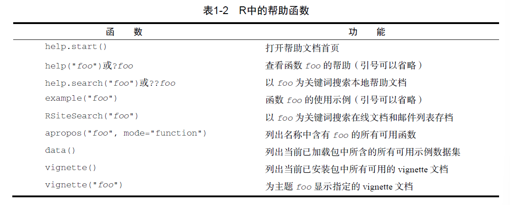
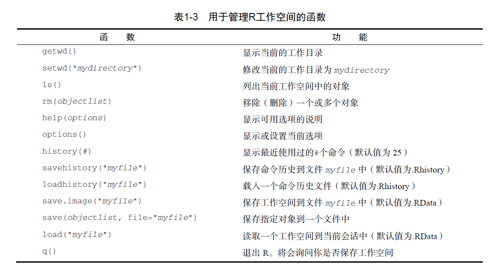

R_learning
介于r语言在统计绘图上的强大功能，决定以实用为目的进行粗浅的学习，所使用的教材选择《R语言实战》。代码见RScripts（不要轻易运行以免出现一些奇怪的东西）
Introduce
帮助功能

函数help.start()会打开浏览器窗口，在其中可以查看帮助手册，问题集以及参考材料，其余的参考表格。尝试后发现，若在VScode中使用该命令，会直接在VScode的窗口中打开该html文件。
工作空间
即当前R的工作环境，其储存着所有定义的对象，但会话结束时，可将当前工作空间保存到一个镜像中并在下次载入。管理工作空间的函数如下。
注意到，路径应该使用正斜杠/，反斜杠\会被作为转义符，此外setwd()函数只能切换目录而不能常见新的目录
包
第一次安装某一个包：install.packages("*")
更新某一个包：update.packages("*")
查看已安装包的描述：installed.packages("*")
包的载入：library(*)
tips：处理大型数据集时需要专门的手段
Creat Dataset
R可以处理的数据类型包括数值，字符，逻辑型，复数，字节。
以下图的数据集为例

PatientID是行/实例型变量，AdmDate为日期型变量，Age是连续型（定量型）变量，Daibetes是名义变量，Status是顺序变量。名义变量和顺序变量都是分类变量，但顺序变量具有自然的顺序性。
R会将实例标识符称为rowname，分类变量称为因子
数据结构
向量
用c()创建向量，如：
1 | a <- c(1, 2, 5, 3, 6, -2, 4) # 数值型 |
注意，单个向量中的数据类型必须相同。
此外，只含一个元素的向量称为标量，如f <- 3，常用于保存常量
通过方括号访问向量中的元素，==R中的位置索引从1开始而非从零开始==，可以同时访问多个元素。
1 | a <- c("k", "j", "h", "a", "c", "m") |
矩阵
矩阵为一个二维数组，同样的，其中的每一个元素必须是相同的类型。通过matrix()创建矩阵，通常所用的格式为：
1 | mymatrix <- matrix(vector, nrow=number_of_rows, ncol=number_of_columns, |
其中vector包含矩阵的元素，其后两个参数分别代表了矩阵的的形状，参数byrow表明矩阵的填充方式（默认按列），为一个布尔值。dimnames为可选参数，其中的char_vector_rownames，char_vector_colnames为字符型向量，表明行名和列名。以下为两个示例：
1 | y <- matrix(1:20, nrow=5, ncol=4) |
1 | cells <- c(1, 26, 24, 68) |
tips：也可以只填写nrow和ncol中的一个，但参数的位置不能交换。
通过下标和反括号选择矩阵中的行X[i,]，列X[,j]或元素X[i,j]，通过将i或j定义为数值型向量可以选择多行或者多列。若i和j均为向量，那么所选择的是一个对应的行和列交叉点处的元素组成的新矩阵。
tips：矩阵中无法通过行名和列名访问元素。
数组
作为矩阵的推广，数组可以是多维的，通过array()创建，如：
1 | myarray <- array(vector, dimensions, dimnames) |
其中dimensions为数值型向量，给出各维度下标的最大值，dimnames为可选变量，为一个包含各维度名称标签的列表，每个维度的名称标签为一个字符型向量。和矩阵一样，数组内的元素只能是一种类型。以下为一个三维（2×3×4）数值型数组。
1 | dim1 <- c("A1", "A2") |
可以看到，数组的输出为多个矩阵，对于n维数组，将数组从后n-2个维度展开，每一项为一个矩阵进行输出，在每一个矩阵前, , *, *, ...即为对应的后n-2个维度中每一个维度内的编号。
数组中，填充顺序与参数dimensions中的顺序一致，即[1, 1,
1, ...] -> [2, 1, 1, ...] -> ... -> [dimensions[1], 1, 1, ...]
-> [1, 2, 1, ...] -> [2, 2, 1, ...] ->
...。即先外层，再内层。
数据框
矩阵另一种方式的推广，其不同的列可以包含不同模式的数据，在表2-1中显示的数据集即一个数据框。数据框可以通过data.frame()创建，如：
1 | mydata <- data.frame(col1, col2, col3, ...) |
其中col1、col2、col3可以为任意类型的向量。
当没有指定列名时，R会自动将变量名作为列名：
1 | patientID <- c(1, 2, 3, 4) |
可以用names函数指定列名：
1 | col1 <- c(1, 2, 3, 4) |
数据框数据的选中有多种方式，可用类似矩阵的下标记号，也可以指定列名：
1 | print(patientdata[1:2]) |
当用坐标的形式选中时，其表现形式与矩阵的选中一致。注意patientdata[1]与patientdata[,1]不同。
而数据框的选中还有一种特殊的形式，即符号$，用于选取一个给定数据框中的某个特定变量。
例如生成diabetes和status的列联表：
1 | print(table(patientdata$diabetes, patientdata$status) |